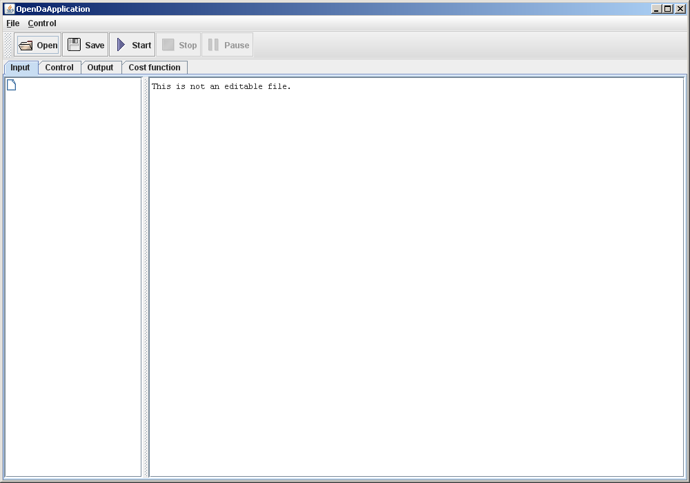
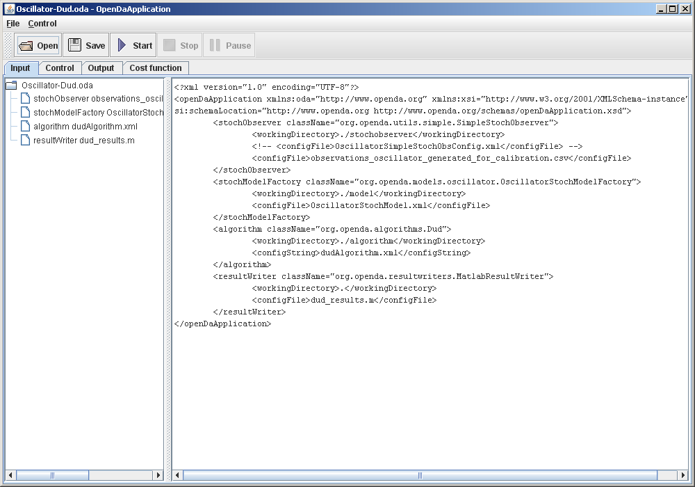

OpenDA tutorial: Using the GUI
Opening and running a model
- The initial state of the graphical user interface should look like:
- Click the Open button and select the main configuration file you want to use.
- This will show the main configuration files and the others that are referred to in the main configuration files. This
should look like: 
- Click the Start button to start the computations.